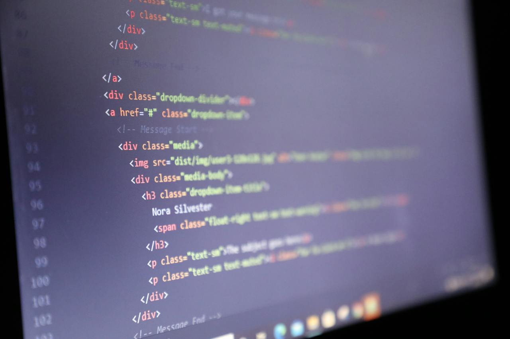

5 dingen die ik heb geleerd bij dit vak:
- Responsive Design (Media Query)
- CSS Flexbox en Grid
- Inhoud, foto's en video's vinden
- Animaties en Overgangen
- Gebruiksvriendelijke documentatie behouden
3 dingen die ik in her vervolg anders doe:
- Kleurenpalet met overweging voor toegankelijkheid
- Responsieve Lay-outs (Veel aandacht aan de mobiel scherm)
- Iteratieve code reviews voor kwaliteitsborging
3 dingen die ik in her vervolg hetzelfde doe:
- Plan de websitestructuur van tevoren
- Altijd werken met "classes"
- Responsive Design als Standaardbenadering

